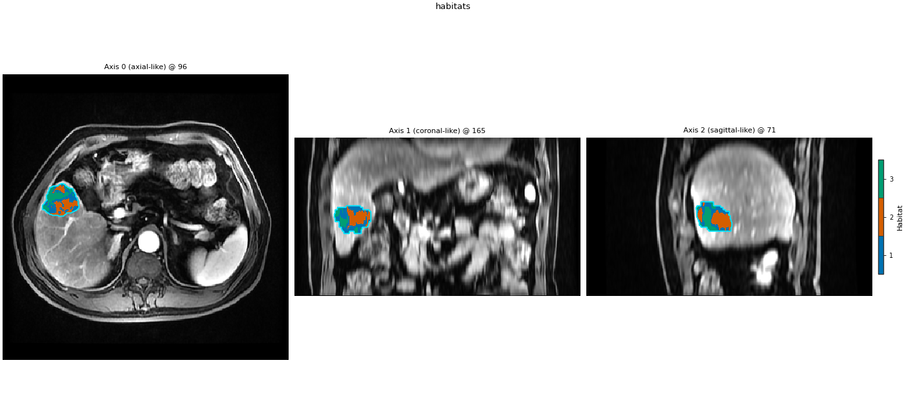

Note
Go to the end to download the full example code.
Parallel and checkpoints
HabitatSpec declares what to compute;
RunPolicy declares how to schedule it. Pass a
ProcessPoolBackend into
fit_predict(). With a fixed random_seed
the maps match serial execution.
Important
Windows + process pool: spawning workers re-imports your script.
Put the run inside if __name__ == "__main__": (already done below).
See also Quickstart: run the demo (YAML + CLI).
Pick a backend with backend_from_policy():
Debug one subject:
RunPolicy(workers=1, backend="serial", subject_timeout_sec=None)Cohort default:
RunPolicy(workers=2, backend="process", subject_timeout_sec=900.0)Fresh process per subject: same, plus
parallel_mode="isolated"
on_subject_failure="continue" records the error and keeps going;
"fail_fast" raises on the first subject. Attach
CheckpointStore so a second run skips successes.
Knob-by-knob: Execution backends.
Compare serial, persistent process-pool, and isolated process-pool on the same two-step spec. Label maps must match when the seed is fixed.
from pathlib import Path
import time
from typing import Any, Dict, List, Optional, Sequence, Tuple
import matplotlib.pyplot as plt
import pandas as pd
from habit.contracts import HabitatMap, cohort_from_directory
from habit.datasets import fetch_demo
from habit.execution.process_pool import ProcessPoolBackend
from habit.recipes import Study, StudyResult
from habit.spec import HabitatSpec, RunPolicy, Spec, Stage
from habit.viz import plot_habitat_overlay
import habit.voxel_features # registers local_entropy for the texture-input spec
def count_label_mismatches(
reference: Sequence[HabitatMap],
other: Sequence[HabitatMap],
) -> int:
"""Count subjects whose integer label volumes differ from serial.
Args:
reference: Serial habitat maps (cohort order).
other: Maps from another backend, same subject order.
Returns:
Number of subjects with any voxel-wise label mismatch.
"""
return sum(
1
for left, right in zip(reference, other)
if not (left.label_array == right.label_array).all()
)
def two_step_raw_spec() -> HabitatSpec:
"""Shared two-step spec (raw intensities) with a fixed seed."""
return HabitatSpec(
name="parallel_demo",
stages=(
Stage(
"extract_voxel_features",
Spec("raw", {"modalities": ["LAP"]}),
),
Stage(
"preprocess1",
Spec(
"winsorize",
{"winsor_limits": (0.05, 0.05), "across_features": False},
),
),
Stage("preprocess2", Spec("minmax", {"across_features": False})),
Stage("partition", Spec("kmeans", {"n_supervoxels": 6, "n_init": 3})),
Stage("pool", Spec("pool")),
Stage(
"fit",
Spec(
"kmeans",
{
"min_habitats": 2,
"max_habitats": 3,
"validation": "elbow",
"n_init": 3,
},
),
),
Stage("assign", Spec("nearest_centroid")),
Stage("quantify", Spec("volume")),
),
random_seed=21,
)
def texture_input_spec() -> HabitatSpec:
"""Same dataflow, but local entropy is the clustering input.
Timing only: this is not a different scientific habitat definition
from the raw-intensity spec above — it is a heavier voxel field
used to show scheduler cost, not a new paper claim.
"""
return HabitatSpec(
name="parallel_texture_input",
stages=(
Stage(
"extract_voxel_features",
Spec(
"local_entropy",
{"modalities": ["LAP"], "kernel_size": 3, "bins": 32},
),
),
Stage(
"preprocess1",
Spec(
"winsorize",
{"winsor_limits": (0.05, 0.05), "across_features": False},
),
),
Stage("preprocess2", Spec("minmax", {"across_features": False})),
Stage("partition", Spec("kmeans", {"n_supervoxels": 6, "n_init": 3})),
Stage("pool", Spec("pool")),
Stage(
"fit",
Spec(
"kmeans",
{
"min_habitats": 2,
"max_habitats": 3,
"validation": "elbow",
"n_init": 3,
},
),
),
Stage("assign", Spec("nearest_centroid")),
Stage("quantify", Spec("volume")),
),
random_seed=21,
)
def timed_fit(
spec: HabitatSpec,
cohort: Any,
*,
backend: Optional[ProcessPoolBackend],
) -> Tuple[StudyResult, float]:
"""Fit-predict and return wall time in seconds.
Args:
spec: Habitat specification (fixed seed).
cohort: Cohort to label.
backend: Process pool, or ``None`` for the serial default.
Returns:
``(result, elapsed_seconds)``.
"""
started = time.perf_counter()
if backend is None:
result = Study(spec=spec).fit_predict(cohort)
else:
result = Study(spec=spec).fit_predict(cohort, backend=backend)
return result, time.perf_counter() - started
def run_scheduler_comparison() -> Tuple[Any, StudyResult, str, pd.DataFrame]:
"""Serial vs persistent vs isolated on the official demo pack.
Returns:
Cohort, serial result (for the overlay), ROI name, timing table.
"""
data = fetch_demo()
roi = "LAP"
# Same small cohort for every scheduler row.
cohort = cohort_from_directory(data, modalities=("LAP",), roi=roi)[:5]
spec = two_step_raw_spec()
serial_result, serial_s = timed_fit(spec, cohort, backend=None)
persistent_policy = RunPolicy(
workers=2,
backend="process",
on_subject_failure="continue",
parallel_mode="persistent",
)
persistent_result, persistent_s = timed_fit(
spec,
cohort,
backend=ProcessPoolBackend.from_policy(persistent_policy),
)
isolated_policy = RunPolicy(
workers=2,
backend="process",
on_subject_failure="continue",
parallel_mode="isolated",
)
isolated_result, isolated_s = timed_fit(
spec,
cohort,
backend=ProcessPoolBackend.from_policy(isolated_policy),
)
rows: List[Dict[str, Any]] = [
{
"config": "serial",
"wall_time_s": serial_s,
"n_maps": len(serial_result.habitat_maps),
"label_mismatches_vs_serial": 0,
},
{
"config": "process_pool_persistent_workers=2",
"wall_time_s": persistent_s,
"n_maps": len(persistent_result.habitat_maps),
"label_mismatches_vs_serial": count_label_mismatches(
serial_result.habitat_maps, persistent_result.habitat_maps
),
},
{
"config": "process_pool_isolated_workers=2",
"wall_time_s": isolated_s,
"n_maps": len(isolated_result.habitat_maps),
"label_mismatches_vs_serial": count_label_mismatches(
serial_result.habitat_maps, isolated_result.habitat_maps
),
},
]
table = pd.DataFrame(rows)
print(table.to_string(index=False))
print(serial_result.features.frame.head())
return cohort, serial_result, roi, table
def run_texture_timing() -> pd.DataFrame:
"""Time serial vs persistent pool on a texture clustering input.
Uses one subject. Does not claim a different scientific definition
from the raw-intensity spec; it only shows scheduler wall time.
"""
data = fetch_demo()
cohort = cohort_from_directory(data, modalities=("LAP",), roi="LAP")[:1]
spec = texture_input_spec()
serial_result, serial_s = timed_fit(spec, cohort, backend=None)
policy = RunPolicy(
workers=2,
backend="process",
on_subject_failure="continue",
parallel_mode="persistent",
)
parallel_result, parallel_s = timed_fit(
spec,
cohort,
backend=ProcessPoolBackend.from_policy(policy),
)
texture_table = pd.DataFrame(
[
{
"config": "texture_serial",
"wall_time_s": serial_s,
"n_maps": len(serial_result.habitat_maps),
},
{
"config": "texture_process_pool_persistent_workers=2",
"wall_time_s": parallel_s,
"n_maps": len(parallel_result.habitat_maps),
},
]
)
print("Texture-input timing (not a different habitat definition):")
print(texture_table.to_string(index=False))
return texture_table
Checkpoints: attach a CheckpointStore so a
second run skips subjects already recorded as success. Recorded
failures stay skipped unless retry_failed_subjects=True.
if __name__ == "__main__":
cohort, serial_result, roi, scheduler_table = run_scheduler_comparison()
fig = plot_habitat_overlay(
cohort[0].image(roi),
serial_result.habitat_maps[0],
title="habitats",
)
Path("out").mkdir(exist_ok=True)
fig.savefig("out/parallel_execution_overlay.png", dpi=150, bbox_inches="tight")
plt.show()
print(serial_result.features.frame.head())
serial_result.features.frame.head()
texture_table = run_texture_timing()
print(texture_table.head())
texture_table.head()
scheduler_table

HABIT demo data (cached)
DATA (preprocessed root): C:\Users\dongm\.habit_data\demo-data-v1\preprocessed
On-disk inventory of this folder:
subjects (5): subj001, subj002, subj003, subj004, subj005
image series: LAP, PVP, delay_3min, pre_contrast
mask keys: LAP, PVP, delay_3min, pre_contrast
example image: images/subj001/delay_3min/WATER__BH_Ax_LAVA_Flex_3min_Series0012.nrrd
example mask: masks/subj001/delay_3min/WATER__BH_Ax_LAVA_Flex_10min_Series0017_mask.nrrd
Your own data must use the same folder tree (change IDs / series names):
DATA/
images/<subject_id>/<modality>/<one image file>
masks/<subject_id>/<roi>/<one mask file>
Then load it with the same call the demos use:
cohort = cohort_from_directory(DATA, modalities=("LAP",), roi="LAP")
Swap DATA / modalities / roi to match your tree. Mask key is often the
same as one image series (here LAP).
Cohort.map[_ComputeUnits]: 0%| | 0/5 [00:00<?, ?it/s]
Cohort.map[_ComputeUnits]: 20%|██ | 1/5 [00:01<00:05, 1.31s/it]
Cohort.map[_ComputeUnits]: 40%|████ | 2/5 [00:02<00:03, 1.23s/it]
Cohort.map[_ComputeUnits]: 60%|██████ | 3/5 [00:03<00:02, 1.20s/it]
Cohort.map[_ComputeUnits]: 80%|████████ | 4/5 [00:04<00:01, 1.17s/it]
Cohort.map[_ComputeUnits]: 100%|██████████| 5/5 [00:05<00:00, 1.17s/it]
Cohort.map[_ComputeUnits]: 100%|██████████| 5/5 [00:05<00:00, 1.17s/it]
Cohort.map[_AssignPrecomputedUnits]: 0%| | 0/5 [00:00<?, ?it/s]
Cohort.map[_AssignPrecomputedUnits]: 20%|██ | 1/5 [00:00<00:01, 2.99it/s]
Cohort.map[_AssignPrecomputedUnits]: 40%|████ | 2/5 [00:00<00:01, 2.97it/s]
Cohort.map[_AssignPrecomputedUnits]: 60%|██████ | 3/5 [00:00<00:00, 3.04it/s]
Cohort.map[_AssignPrecomputedUnits]: 80%|████████ | 4/5 [00:01<00:00, 3.04it/s]
Cohort.map[_AssignPrecomputedUnits]: 100%|██████████| 5/5 [00:01<00:00, 2.99it/s]
Cohort.map[_AssignPrecomputedUnits]: 100%|██████████| 5/5 [00:01<00:00, 2.99it/s]
Cohort.map[_ComputeUnits]: 0%| | 0/5 [00:00<?, ?it/s]
Cohort.map[_ComputeUnits]: 20%|██ | 1/5 [00:09<00:38, 9.71s/it]
Cohort.map[_ComputeUnits]: 40%|████ | 2/5 [00:09<00:14, 4.91s/it]
Cohort.map[_ComputeUnits]: 60%|██████ | 3/5 [00:11<00:07, 3.73s/it]
Cohort.map[_ComputeUnits]: 80%|████████ | 4/5 [00:11<00:02, 2.83s/it]
Cohort.map[_ComputeUnits]: 100%|██████████| 5/5 [00:12<00:00, 2.53s/it]
Cohort.map[_ComputeUnits]: 100%|██████████| 5/5 [00:12<00:00, 2.53s/it]
Cohort.map[_AssignPrecomputedUnits]: 0%| | 0/5 [00:00<?, ?it/s]
Cohort.map[_AssignPrecomputedUnits]: 20%|██ | 1/5 [00:00<00:01, 3.04it/s]
Cohort.map[_AssignPrecomputedUnits]: 40%|████ | 2/5 [00:00<00:00, 3.06it/s]
Cohort.map[_AssignPrecomputedUnits]: 60%|██████ | 3/5 [00:01<00:00, 2.93it/s]
Cohort.map[_AssignPrecomputedUnits]: 80%|████████ | 4/5 [00:01<00:00, 2.94it/s]
Cohort.map[_AssignPrecomputedUnits]: 100%|██████████| 5/5 [00:01<00:00, 2.85it/s]
Cohort.map[_AssignPrecomputedUnits]: 100%|██████████| 5/5 [00:01<00:00, 2.85it/s]
Cohort.map[_ComputeUnits]: 0%| | 0/5 [00:00<?, ?it/s]
Cohort.map[_ComputeUnits]: 20%|██ | 1/5 [00:10<00:40, 10.14s/it]
Cohort.map[_ComputeUnits]: 40%|████ | 2/5 [00:10<00:16, 5.48s/it]
Cohort.map[_ComputeUnits]: 60%|██████ | 3/5 [00:23<00:15, 7.86s/it]
Cohort.map[_ComputeUnits]: 80%|████████ | 4/5 [00:24<00:06, 6.15s/it]
Cohort.map[_ComputeUnits]: 100%|██████████| 5/5 [00:34<00:00, 6.84s/it]
Cohort.map[_ComputeUnits]: 100%|██████████| 5/5 [00:34<00:00, 6.84s/it]
Cohort.map[_AssignPrecomputedUnits]: 0%| | 0/5 [00:00<?, ?it/s]
Cohort.map[_AssignPrecomputedUnits]: 20%|██ | 1/5 [00:00<00:01, 2.10it/s]
Cohort.map[_AssignPrecomputedUnits]: 40%|████ | 2/5 [00:00<00:01, 2.16it/s]
Cohort.map[_AssignPrecomputedUnits]: 60%|██████ | 3/5 [00:01<00:00, 2.21it/s]
Cohort.map[_AssignPrecomputedUnits]: 80%|████████ | 4/5 [00:01<00:00, 2.24it/s]
Cohort.map[_AssignPrecomputedUnits]: 100%|██████████| 5/5 [00:02<00:00, 2.22it/s]
Cohort.map[_AssignPrecomputedUnits]: 100%|██████████| 5/5 [00:02<00:00, 2.22it/s]
config wall_time_s n_maps label_mismatches_vs_serial
serial 7.614438 5 0
process_pool_persistent_workers=2 15.814108 5 0
process_pool_isolated_workers=2 36.553993 5 0
subject ... habitat_3_volume_fraction
0 subj001 ... 0.306739
1 subj002 ... 0.392879
2 subj003 ... 0.276316
3 subj004 ... 0.334932
4 subj005 ... 0.283128
[5 rows x 7 columns]
F:\work\habit_project\habit\viz\habitat_overlay.py:640: UserWarning: Display geometry conflict: image/anatomy direction does not match mask/label direction. Using the mask/label direction so coronal/sagittal superior-up follows the labelled anatomy. Pass direction= to override.
resolved_direction, resolved_spacing = resolve_display_geometry(
subject ... habitat_3_volume_fraction
0 subj001 ... 0.306739
1 subj002 ... 0.392879
2 subj003 ... 0.276316
3 subj004 ... 0.334932
4 subj005 ... 0.283128
[5 rows x 7 columns]
HABIT demo data (cached)
DATA (preprocessed root): C:\Users\dongm\.habit_data\demo-data-v1\preprocessed
On-disk inventory of this folder:
subjects (5): subj001, subj002, subj003, subj004, subj005
image series: LAP, PVP, delay_3min, pre_contrast
mask keys: LAP, PVP, delay_3min, pre_contrast
example image: images/subj001/delay_3min/WATER__BH_Ax_LAVA_Flex_3min_Series0012.nrrd
example mask: masks/subj001/delay_3min/WATER__BH_Ax_LAVA_Flex_10min_Series0017_mask.nrrd
Your own data must use the same folder tree (change IDs / series names):
DATA/
images/<subject_id>/<modality>/<one image file>
masks/<subject_id>/<roi>/<one mask file>
Then load it with the same call the demos use:
cohort = cohort_from_directory(DATA, modalities=("LAP",), roi="LAP")
Swap DATA / modalities / roi to match your tree. Mask key is often the
same as one image series (here LAP).
Cohort.map[_ComputeUnits]: 0%| | 0/1 [00:00<?, ?it/s]
Cohort.map[_ComputeUnits]: 100%|██████████| 1/1 [01:38<00:00, 98.68s/it]
Cohort.map[_ComputeUnits]: 100%|██████████| 1/1 [01:38<00:00, 98.68s/it]
Cohort.map[_AssignPrecomputedUnits]: 0%| | 0/1 [00:00<?, ?it/s]
Cohort.map[_AssignPrecomputedUnits]: 100%|██████████| 1/1 [00:00<00:00, 2.36it/s]
Cohort.map[_AssignPrecomputedUnits]: 100%|██████████| 1/1 [00:00<00:00, 2.36it/s]
Cohort.map[_ComputeUnits]: 0%| | 0/1 [00:00<?, ?it/s]
Cohort.map[_ComputeUnits]: 100%|██████████| 1/1 [01:56<00:00, 116.37s/it]
Cohort.map[_ComputeUnits]: 100%|██████████| 1/1 [01:56<00:00, 116.37s/it]
Cohort.map[_AssignPrecomputedUnits]: 0%| | 0/1 [00:00<?, ?it/s]
Cohort.map[_AssignPrecomputedUnits]: 100%|██████████| 1/1 [00:00<00:00, 2.61it/s]
Cohort.map[_AssignPrecomputedUnits]: 100%|██████████| 1/1 [00:00<00:00, 2.61it/s]
Texture-input timing (not a different habitat definition):
config wall_time_s n_maps
texture_serial 99.202235 1
texture_process_pool_persistent_workers=2 117.532206 1
config wall_time_s n_maps
0 texture_serial 99.202235 1
1 texture_process_pool_persistent_workers=2 117.532206 1
Total running time of the script: (4 minutes 39.200 seconds)